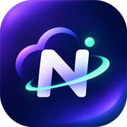

CONFIRMACIÓN DE SERVICIO
Confirma tu cita
Presiona el botón para confirmar la cita que recibiste por WhatsApp.
No necesitas instalar una aplicación ni iniciar sesión.

CONFIRMACIÓN DE SERVICIO
Presiona el botón para confirmar la cita que recibiste por WhatsApp.
No necesitas instalar una aplicación ni iniciar sesión.